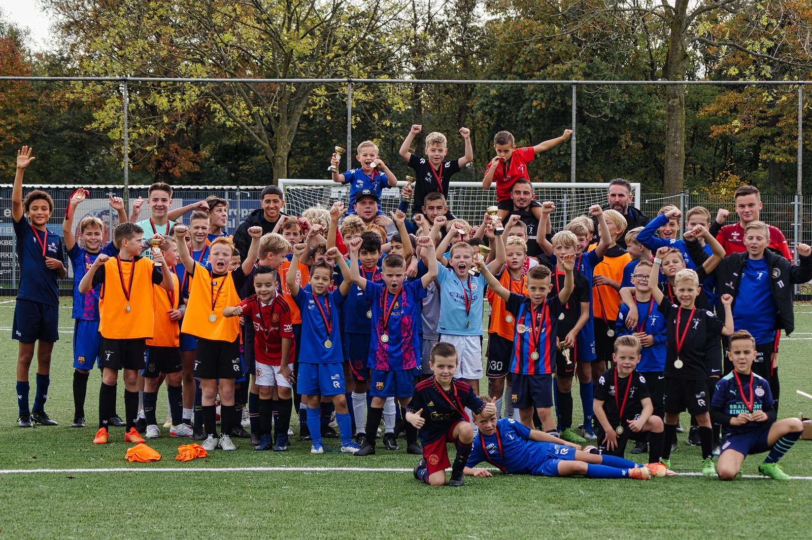
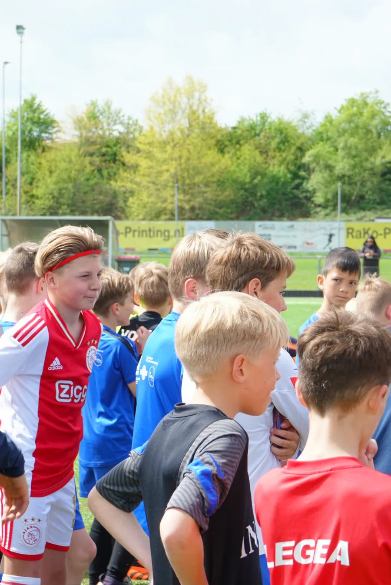
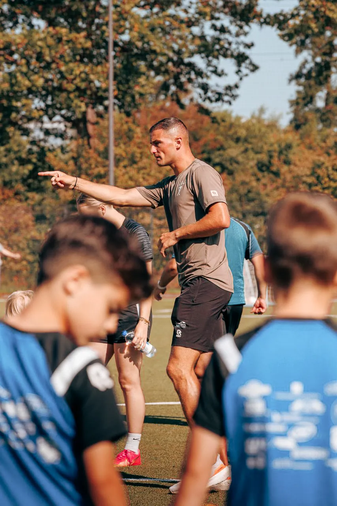
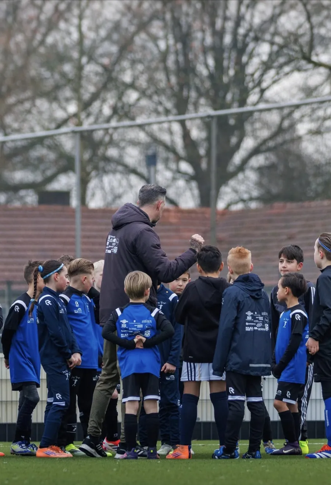
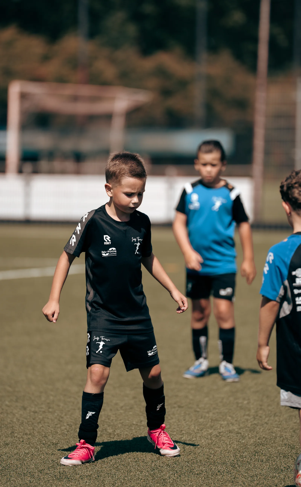

Trainen met ervaren coaches
Oefenvormen op techniek, snelheid en spelinzicht, gegeven door trainers uit het betaald voetbal. Uitdagend, leerzaam en vooral leuk.

Clinics en profdagen
Herfstvakantie 2026
Elke profdag duurt drie uur. Je meldt je aan via WhatsApp; de betaling van 50 euro regel je daarna via de online boeking. Vol is vol.
Liever direct online boeken en betalen? Dat kan via de boekingspagina.
Wat je kind meemaakt
Oefenvormen op techniek, snelheid en spelinzicht, gegeven door trainers uit het betaald voetbal. Uitdagend, leerzaam en vooral leuk.

Bij elke profdag kijken scouts van verschillende clubs mee. Op de Talentendag in Leimuiden zijn dat onder meer vertegenwoordigers van FC Den Bosch en NEC.

Drinken en vers fruit in de pauze, en drie uur samen voetballen met andere liefhebbers. Of je nu net begint of al jaren speelt.


Clinic op jouw club of school
Een clinic van anderhalf uur op jouw eigen club, school of BSO kost 100 euro.
Van een eenmalige clinic tot een heel seizoen: clubs als Kozakken Boys en sv CHC laten hun complete pupillenafdeling wekelijks trainen door trainers van de voetbalschool. Bij Excelsior Zetten en FC Engelen draaiden cycli van tien trainingen.

Herfstvakantie
Elke profdag heeft een beperkt aantal plekken. Je krijgt binnen 24 uur bevestiging.
Wil je een gratis proefles plannen of heb je een vraag over de trainingen? Stuur een berichtje, je krijgt binnen 24 uur antwoord van het team.
Chat openen